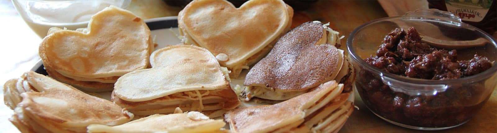

8 servings
45 minutes
- 4 tablespoons butter, melted
- 2 large eggs, separated
- 3 ½ cups flour
- 2 teaspoons baking powder
- 2 tablespoons white sugar
- 1 ½ cups buttermilk
- 4 tablespoons buttermilk
- 2 teaspoons butter
- 2 (4 ounce) bar milk chocolate, coarsely chopped
- 2 tablespoons sugar, or sweetener
- Whisk melted butter and egg yolk together in a small bowl.
- Sift flour and baking powder into a large bowl; stir in sugar. Whisk in egg-butter mixture and 3/4 cup plus 2 tablespoons buttermilk until a smooth, thick batter forms. Add more buttermilk, 1 tablespoon at a time, if batter is too thick.
- Melt 1 teaspoon butter in a nonstick skillet over high heat. Reduce the heat to medium and use a ladle to spoon 1/8 of the batter onto the hot skillet; fit as many pancakes on the skillet as possible without overcrowding. Cook until bubbles form and the edges are dry, 3 to 4 minutes. Flip and cook until browned on the other side, 2 to 3 minutes. Transfer to a warm plate. Repeat with remaining batter.
- Use a large, heart-shaped cookie cutter to cut a heart in the center of each pancake.
- Place a few chocolate pieces on top of a warm pancake and sandwich another pancake on top
- Sprinkle with sugar or sweetener and serve.
500
Calories
15g
Fat
70g
Carbs
25g
Protein